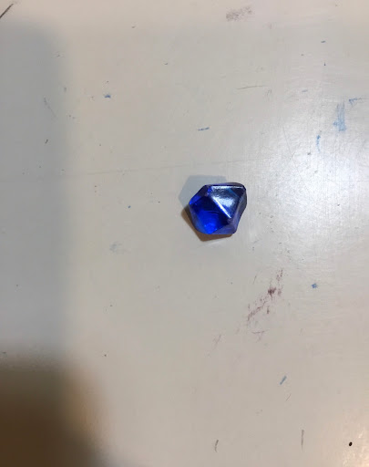

Case Study 
Test Image -
Output on: Google Lens- Fevicol Glue
Output on: Mobilenet Model- hairspray
Results -
Google Lens is more accurate
Test Image -
Output on: Google Lens- Flower pot
Output on: Mobilenet Model- punching bag
Results -
Google Lens is more accurate
Test Image - 
Output on: Google Lens- Sapphire
Output on: Mobilenet Model- gem
Results -
Mobilenet Model is more accurate
Test Image -
Output on: Google Lens- Quartz watch
Output on: Mobilenet Model- stopwatch
Results -
Google Lens is more accurate
Test Image -